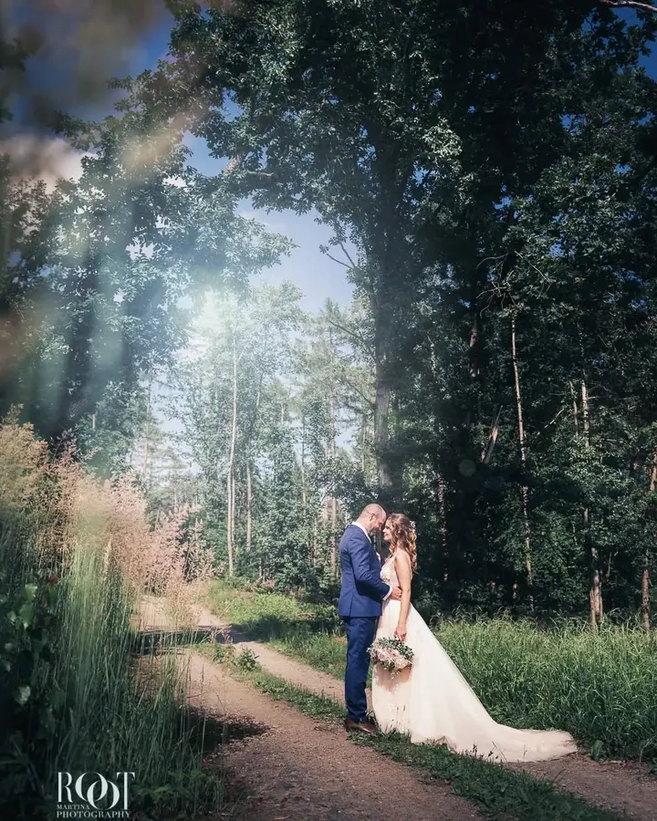
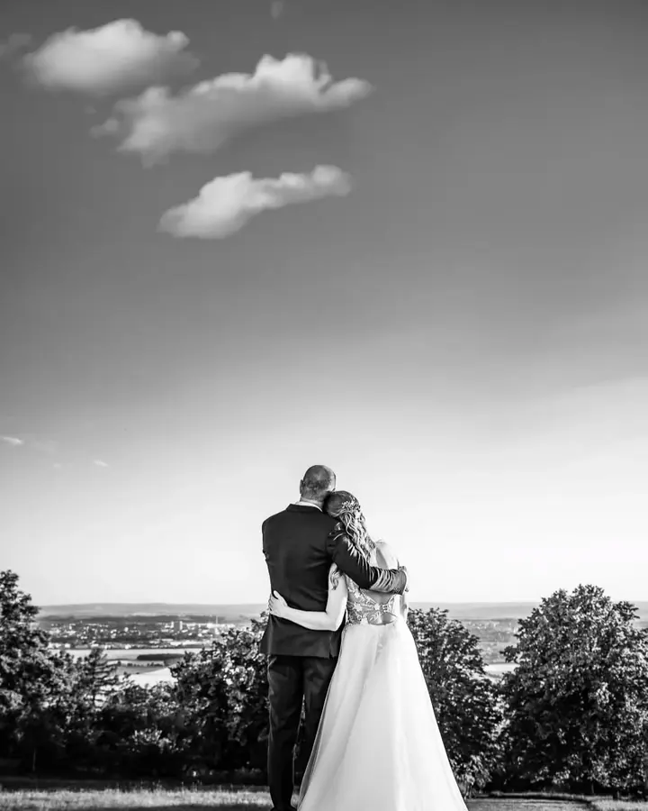
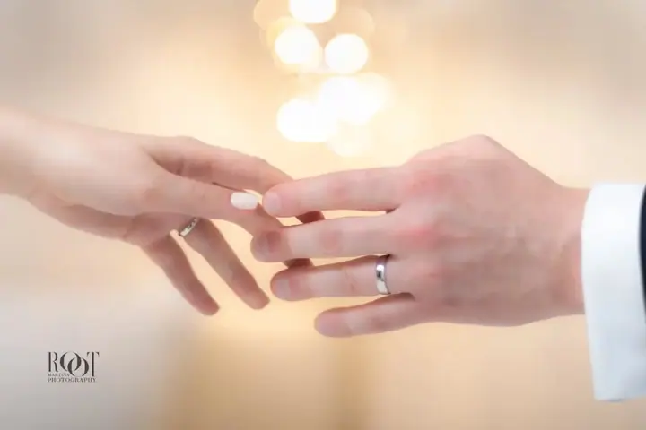
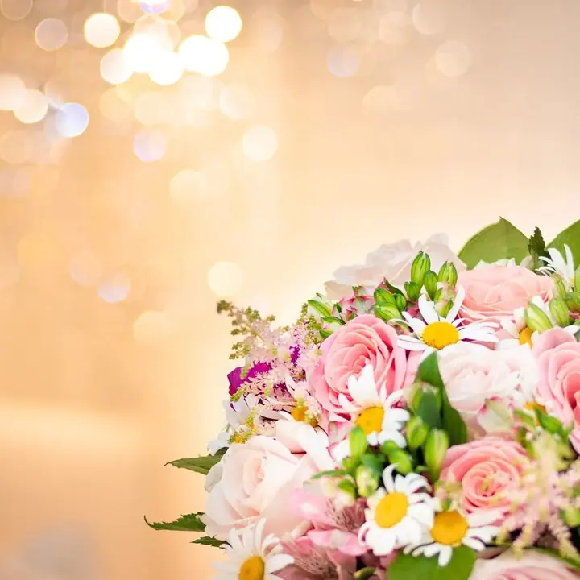
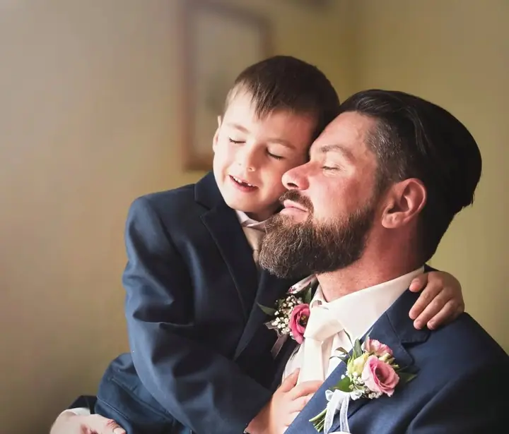

Svatební fotografie
Svatbu fotím jako reportáž od přípravy až po večer a často vám během dne dělám i svatební průvodkyni. S manželem Martinem, který je kameraman, můžete mít fotky i video od jednoho týmu.





Jmenuji se Martina Root a víc než dvacet let fotím svatby, rodiny s dětmi i portréty. Pracuji v Plzni a v Praze, často spolu s manželem Martinem, který natáčí video.
Více o mně„Tato práce nás baví a jak poznáte sami, fotíme s radostí a úsměvem.“
— Martina Root
Svatbu fotím jako reportáž od přípravy až po večer a často vám během dne dělám i svatební průvodkyni. S manželem Martinem, který je kameraman, můžete mít fotky i video od jednoho týmu.
Rodinu, děti i miminka fotím v ateliéru v Praze, který vybereme podle toho, kolik vás bude. Pro menší děti a miminka máme oblečení na půjčení.
Fotím osobní portréty, portréty na plátno i glamour a boudoir. Takové focení můžete také darovat jako dárkový poukaz.
Fotím business portréty, firemní akce a reklamní a produktové fotografie. Ke každé zakázce patří retuš na úrovni reklamy a příprava pro tisk i web.
Fotografii se věnuji profesionálně víc než dvacet let a do svého bia jsem napsala „My job = My life“. Prošla jsem reklamou i kulturou, a tak umím připravit portrét, který dobře poslouží na plátně doma stejně jako na plakátu.
Pod značkou FotoEmotion pracuji s manželem Martinem. Já fotím a on natáčí, takže od nás můžete mít svatbu na fotkách i na videu. Fotíme spolu i děti ve školách a školkách a při focení se snažíme, aby byla pohoda a klid.
Fotím se stálým asistentem a se studiovými světly i kompletní technikou pro focení venku. Spolupracuji s několika ateliéry v Praze a v Plzni, takže pro každé focení vybereme místo, které mu sedne. Retuše a úpravy dělám sama, pečlivě a s citem pro detail.
Pošlete mi termín, místo a představu o focení. Ověřím, jestli mám volno, a připravím nabídku na míru.
U svatby projdeme plán dne, u ateliérového focení vybereme ateliér podle počtu osob a stylu.
Fotím v klidu a bez spěchu, na svatbě vám v případě potřeby pomohu i s průběhem dne. Na počasí nehledím, jsem připravená na všechno.
Vybrané fotografie ručně upravím a předám vám je v elektronické podobě v maximální velikosti.
Ano. Můj manžel Martin Root je kameraman, takže vám rádi zajistíme fotky i video společně.
Balíček MEDIUM stojí 9 400 Kč a zahrnuje 1,5 hodiny focení a 12 retušovaných fotografií. Balíček LARGE za 11 400 Kč nabízí 2,5 hodiny focení a 17 upravených fotografií, je ideální pro velkou rodinu.
V Praze fotíme hlavně v ateliéru na Chodově, kam se vejdou i větší skupiny, a v útulném ateliéru u I. P. Pavlova pro nejvýš tři osoby. Spolupracuji i s ateliéry v Plzni.
Ano, glamour a boudoir focení můžete darovat jako dárkový poukaz. Pro svatby nabízím také svatební voucher.
info@fotoemotion.cz
Plzeň · Praha